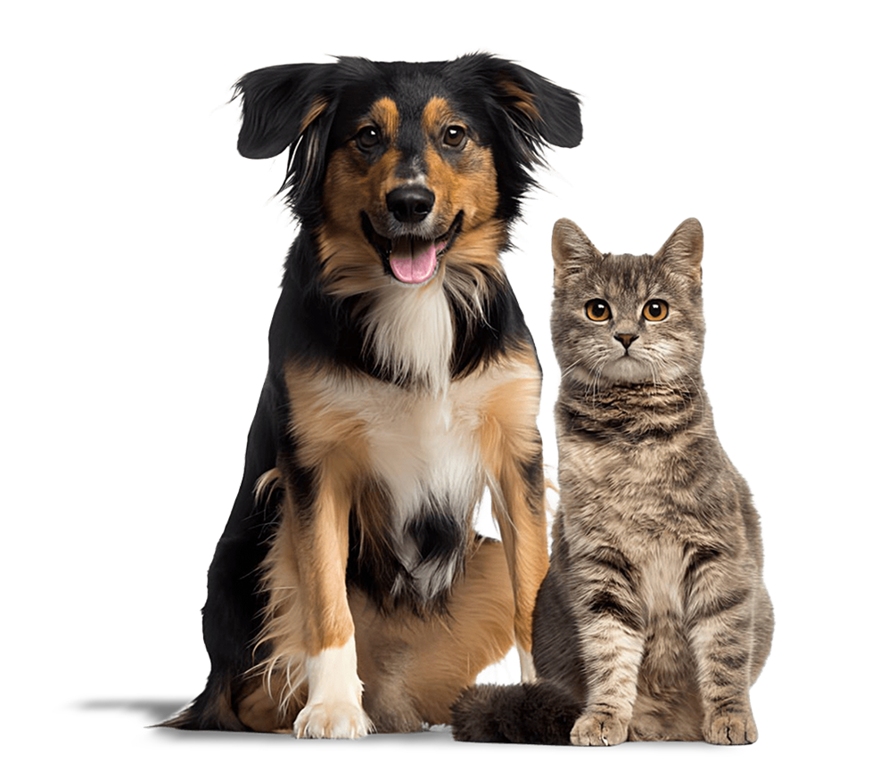
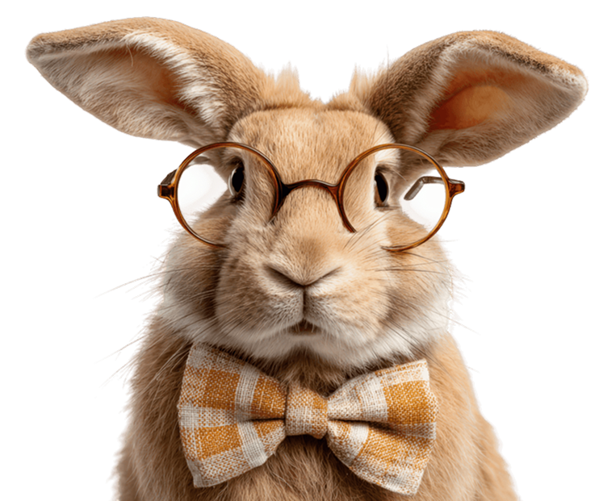
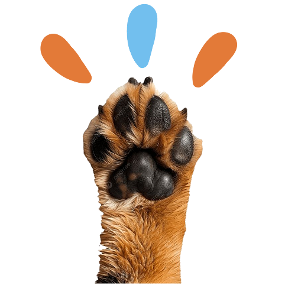

Acolhimento
Oferecemos acolhimento para gatos que sofreram maus-tratos ou foram abandonados na rua.
 Audote com amor
Audote com amor
Somos a Audote com Amor, uma plataforma com foco na região de São Paulo, na proteção, resgate e adoção de animais.
Cuidamos de animais abandonados criando pontes de esperança entre os bichinhos resgatados e novos lares cheios de amor.


Aqui, cada história é única e cada ajuda, um ato de amor!
Oferecemos acolhimento para gatos que sofreram maus-tratos ou foram abandonados na rua.
Proporcionamos um local seguro e cuidado por profissionais que abrigam os animais até a sua adoção.
Promovemos a conscientização sobre a importância da adoção responsável e dos cuidados necessários para garantir o bem-estar dos felinos.
Os nossos resgatados estão ansiosos para conhecer os seus futuros humanos.
Se você é das Zonas Norte, Sul e Oeste de São Paulo, da Baixada e Interior, clique no botão abaixo, fale com a nossa equipe, conheça suas histórias e encontre aquele que vai conquistar seu coração com um só olhar.
Veja Nossos Pets
Logo abaixo, separamos as perguntas e respostas mais frequentes por aqui. Se ainda assim tiver alguma dúvida, entre em contato com nossa equipe.
Que tal conhecer os pets que estão esperando por um novo
lar? 🐾
Navegue pelos perfis, descubra um pouco mais sobre cada pet
e encontre aquele que combina com você e com o seu jeito de
viver. Você pode conhecer diferentes histórias,
personalidades e necessidades até encontrar um companheiro
que faça seu coração bater mais forte. 💙
Quem sabe o seu novo melhor amigo não está por aqui
esperando por você?
A adoção é para quem está pronto para abrir espaço na vida e
no coração para um novo companheiro. 🐾💙
Se você tem amor, responsabilidade e disposição para cuidar
de um pet, pode encontrar aqui um amigo para compartilhar
muitos momentos especiais. Cada adoção é uma nova chance de
construir uma história cheia de carinho, companhia e
descobertas.
Sim! 🐾💙 Cuidamos de cada animalzinho com muito amor,
carinho e responsabilidade. Todos recebem acompanhamento
veterinário, são vacinados para ficarem protegidos contra
doenças e, sempre que possível e recomendado, também são
castrados.
Nosso objetivo é garantir que cada um deles tenha saúde,
segurança e a oportunidade de viver uma vida feliz e cheia
de amor.
Existem muitas formas de transformar a vida de um
animalzinho — e você pode fazer parte dessa história!
No nosso site de adoção, você pode adotar, compartilhar os
perfis dos animais, oferecer um lar temporário ou
simplesmente ajudar a divulgar nossa causa. Cada pequena
atitude faz uma grande diferença. 🐶🐱
Quem sabe o próximo encontro especial não seja entre você e
o seu novo melhor amigo? 💕
Acesse nosso site, conheça nossos animais e descubra como
você pode ajudar a mudar uma vida.
Sua doação pode fazer a diferença na vida de pets que precisam de cuidados, alimentação e muito carinho.

Sua contribuição pode garantir que eles recebam tudo o que precisam para viver melhor e encontrar uma família.